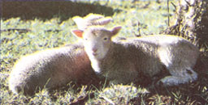
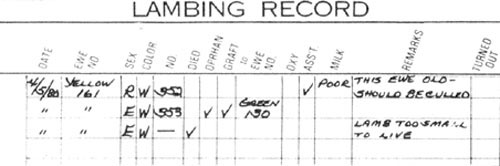
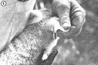
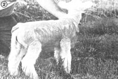
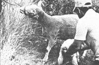
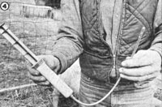

A shepherd tells how to best survive the most critical time of the year.
PART I PREPARING YOUR FLOCK
Elora McKenzie
Whether you're managing five pregnant ewes or 500-as my husband Mac and I did last spring-you'll soon find that establishing a routine lambing procedure can keep birthing nightmares to a minimum. After nearly six years in the sheep business, my husband and I have come up with several shepherding techniques that make our lives a lot easier during this crucial time of year. Perhaps by sharing some of our hard-won experience we can spare you some of the agony and expense that comes from learning about lambing by trial and error. Using our tools and procedures won't necessarily result in the 200% lamb crop every shepherd hopes for of course, but it may (at least) keep you from having such a lousy time with lambing that you give up on sheep raising altogether!
Many of the steps that can help insure successful, hassle-free lambing experiences should be taken well before the actual birthing days begin. Indeed, such preparatory measures are so important that I'll devote this entire article to them. Then, in MOTHER NO. 73, I will describe a good shepherd's duties during those exciting-and tiring-"birthday weeks".
Mac and I start our lambing preparations, six months before we see the first fuzzy babe, by worming and flushing our herd. Both actions will, by boosting the fertility of our rams and ewes, improve the chance for multiple births . . . and increase our lamb crop by as much as 20%!
We find the best prebreeding wormer to be the oral medication Levamisole. (Ask your vet for a recommendation, though, as other medicines might be more suited to specific problems in your area.) This broad-spectrum parasiticide kills almost all stomach and intestinal worms in sheep, and wipes out lungworms (parasites that inhibit breathing) as well.
The term "flushing" refers to giving livestock a short-term quality and quantity increase in their feed. A month before breeding begins, we start feeding each sheep 1/4 to 1/2 pound of grain per day, and turn all the animals out in lush fall pastures. If, however, the new pas ture is largely legumes-such as clover or alfalfa-we're careful to set the animals on the new land for only short periods of time at first, and then to increase their grazing time gradually. This precaution protects the sheep from bloat . . . a dangerous-and often fatal-entrapment of gas in the rumen that can follow a too rapid ingestion of legumes.
If your ram's free-as a relative of ours used to say-to "spread his raw oats" from Labor Day to Mother's Day, you won't know whether your ewes were bred for a January "drop" in nine-below-zero weather (in which case you'll get lamb popsicles instead of sheep if the newborns aren't immediately sheltered) or July birthings (when summer flies can practically devour both mothers and offspring).
A good shepherd will, therefore, limit the range of lamb birthdays by [a] pasturing all rams separately-and secure ly-until approximately five months in advance of the desired first lambing date, and [b] removing the sire from the ewe pasture five months before the date upon which he or she hopes the season will end.
Or, to be more specific: A sheep's gestation period is roughly 143 to 150 days (it varies some from one breed or individual to another). So if you want your first lambs to arrive soon after February 24, let his highness start breeding the ewes on September 28. Then if you plan to stem the tide of newborns after, say, May 25, you'll have to sentence the stud to celibacy by December 27.
Since the estrus (heat) cycle of a ewe is approximately 17 days, that 91-day breeding program would allow each ewe five cycles to become pregnant . . . and believe me, a well cared-for animal that hasn't been successfully bred after five tries simply isn't worth feeding. In fact, on our large farm, we allow breeding during two heat cycles only. Those females that turn up barren at lambing time (an average of 5% annually) are culled . . . that is, sent to either the auction block or the freezer.
There's a good reason for our establishing a shorter breeding season, too. After all, 91 consecutive days of making nightly (3:00 a.m.) lamb checks, attending difficult births (sometimes for days at a stretch), and trying to keep track of the separate feeding requirements of pregnant and lambed ewes would seem like an eternity of labor. By limiting the breeding time, we guarantee a shorter lambing season, keep our farm functioning on a practical basis, and avoid nervous breakdowns!
You won't be able to tell which animals should be culled at the end of the season unless all your sheep are properly identified. Of course, if you've got only a few wool-bearers, you can name the individuals-we started out with Granny, Fancy, and W.B. (Wild Bastard) ourselves-but anyone with more than five sheep will find numbered ear tags essential. Be sure to attach the markers to your flock members well ahead of lambing season . . . so you won't put the expectant mothers through potentially stressful experiences just prior to delivery time.
Our ewes each wear two tags: a slim metal label in one ear (put on when the animal was a youngster) and a large, plastic, double-sided tab-which is easy to read from a distance-in the other. The bigger labels can be really helpful in the long-range "detective work" a shepherd often gets involved in during lambing time. (It'd be great if a ewe would walk up to you and confess, "Hi! I'm No. 161, and I just had twins back there behind the barn. One's dead and I don't much care for the other." That kind of cooperation, however, is a bit rare.)
Two months before the first lamb is due, we organize all the birthing equipment we have and order any new items we'll need. Keep in mind, though, that Mac and I have a large operation, and almost all the births occur out in the fields. A small-scale shepherd, especially one who keeps any expectant ewes in a barn-as could well be the case in cold weather-might not need all the equipment described here.
[1] Iodine. We use a 7%, solution of the disinfectant (it's available from a veterinarian, veterinary supply house, or feed store) to coat all the newborns' navel cords immediately after birth. This procedure will help to prevent bacteria caused "navel ills" (infections) and/or lamb scours (diarrhea).
[2] A 60-cc. syringe with a small-bore rubber catheter When my husband and I are nearly exhausted from long days and nights, foul weather, and uncooperative mothers, the last thing either of us wants to do is try to con a reluctant ewe into standing still . . . or convince a starved but confused infant that it needs to nurse. With the syringe and a 14" to 16" catheter (both should be available from a local drugstore or medical/ veterinary supply company), we can quickly and easily tube-feed a small lamb some of the vital antibody-laden colostrum (the milk a mother produces the first day after birth) that it needs to survive.
[3] Corn colostrum. Emergency supplies of ewe colostrum are hard to come by, and there is no reliable synthetic substitute. Cow colostrum, though, can provide a newborn lamb with the necessary antibodies and vitamin A, as well as help set its digestive system in motion . . . and the calf nurser, is readily available. (In fact, dairies often have to discard surplus colostrum !) So we try to obtain a gallon or two of the defense-giving fluid from a local dairy at calving time, and freeze it in plastic rneat trays.
We can then defrost the "first milk" when it's needed (be careful, though . . . colostrum can easily be spoiled by cooking, so if there's not time to thaw the liquid at room temperature, it must be warmed very gradually in a double boiler), load the syringe through the catheter tube, clear the air from the dispenser, and give any weak youngster a two-ounce swallow of milk. To do this, we slowly slide the catheter tube down the lamb's gullet and squeeze-gently-on the syringe's plunger to squirt the milk out. You have to be careful not to send the liquid down the newborn's windpipe (if you can feel the tube traveling down the animal's neck and see it pressing against the lamb's flesh as you install it, you're doing fine) and to inject the milk slowly, so it doesn't bubble over into the windpipe. Otherwise, the youngster could come down with pneumonia.
[4] LamDry rovers. Believe it or not, we're crazy about these plastic lamb raincoats! In cold or wet weather, a baby sheep can lose 50%, of its body heat within half an hour after it's dropped. Since most of our lambs are born in Aprilwhen a gentle spring rain can suddenly turn into a nasty ice storm-we dress all the newborns in LamDry covers to help lock in their body heat. And to lessen the (remote) possibility that a ewe will reject her, trench-coated offspring, we also smear some of the mother's afterbirth on each newborn tarot its wrapper . . . then remove the rain gear three days later, when we dock the youngster's tail. LamDrys are available from Sheepman Supply (see the list of suppliers that accompanies this article).
[5] Lamb tags and pliers. We're reminded of the importance of being able to easily identify lambs-as well is ewes-each time we discover a lost youngster. The little one's tag enables us to restore it to family security in an instant.
To label the babes, we use specially designed pliers that punch through the animals' ears and attach small aluminum tags. (Both items are available from sheep supply houses.) And we make sure the loops hang free . . . to allow room for the animals' subsequent growth.
[6] Lambing records Since it's necessary for any serious sheep-raising operation to keep track of which ewes are good breeders and which will need to be culled, we maintain record sheets that can provide us with a wealth of detail at a glance. If you look at the accompanying sample file, you'll see just how informative such a sheet can be.
Some of the headings on the form may not be self-explanatory. "Color" identifies whiteface or blackface offspring. "Graft" refers to the technique of transferring an orphaned lamb to a surrogate mother . . . in this case, one newborn was grafted to greentagged No. 130. "Oxy" is our shorthand label for a drug, oxytocin, sometimes administered to initiate milk flow. "Asst." denotes that the mother needed birthing assistance. And "turned out" marks the date the lamb and ewe were moved out to open pasture.
[7] Halter. Since Mac and I alternate lamb check shifts, we each often single-handedly cope with emergencies-such as a lamb that needs to be pulled out of a skittish yearling ewe-in the field. Therefore, we always carry a sheep halter to snub a ewe to the fence in such situations. (A restrainer can be made from baling twine-just tie a simple noose-or purchased from a sheep supply house.)
[8] Hurdles. These folding half-pens are made of two five-foot-long, lightweight-lumber fence sections that have been hinged together. We position hurdles near the lambing area's fenceline to form temporary pens. Since twin-bearing ewes sometimes reject one offspring when in open pasture-while a short period of confinement together can help ce ment family relationships-we "jug" (as hurdle-penning is often called) all mothers that give birth to two lambs until the parent seems to accept both children. At other seasons the conveniently mobile-if somewhat flimsy-fence sections serve as chutes for pasture rotation, stalls for worming, temporary fence patches, and hospital pens.
[9] Antibiotics and a syringe with I8-gauge needles. We keep both oxytetracycline and dihydrostreptomycin-penicillin on hand during lambing. Oxytetracycline is administered to any ewe that's just had a birthing trauma. [EDITOR'S NOTE: We'd recommend consulting a vet when a ewe has serious lambing difficulties.] And one-half milliliter of dihydrostreptomycin-penicillin is given to lambs . . . to help prevent a pinkeye irritation that can be caused by nursing through dirty wool. (Ideally, expectant ewes should be "crutched"-that is, shorn around the crotch and udder-before lambing time. Since we don't always manage to shave every ewe on our busy farm, we occasionally have to fight pinkeye with appropriate medical artillery.)
[10] Docking and castration equipment. Most shepherds have strong opinions about which docking and castration tools are best. We've experimented with all the common techniques, though, and-through experience-have come to feel that the most humane yet thorough methods for the two procedures are to dock tails with a burdizzo (a clamping instrument) and knife . . . and to castrate with a knife alone. Both operations can be accomplished quickly-thereby causing less extended trauma for the lamb than other techniques do-and don't usually cause much bleeding.
Here are some optional tools that have proved very useful around our farm.
[11] Long-handled aluminum fishing dip nets. If your sheep are all pets, this sort of lamb-snatching device may seem outrageous, but if-like us-you need to catch a number of speedy and agile three-day-olds each year for tail docking, a net can help a lot!
[12] Lamb milk replacer, lamb nipples, and pop bottles. When a mother dies or rejects a twin and there isn't a substitute parent available for the orphan, you'll have to raise the foundling yourself. Lamb milk replacer and nipples that fit a standard soft-drink bottle-the usual tools for this job-are generally available at feed stores. Properly formulated lamb replacer, by the way, has an entirely different salt balance and fat content from calf replacer, so don't use the bovine compound.
[13] Thermal vacuum bottle. We carry an insulated jug filled with warm colostrum on every lamb check so that we can tube-feed any weak newborns on the spot.
[14] Wagon. A garden cart-or even a child's toy wagon-is a useful vehicle for carrying supplies around in a field.
[15] Bedding. Since we use lambing pens only occasionally, clean bedding is largely an optional item for us. It's essential, however, when lambing occurs in a barn. The floors of such areas must be kept scrupulously sanitary-and the bedding changed often-to ward off lamb scours and other evils. Clean hay is excellent for this purpose. Sawdust bedding, on the other hand, may get tangled up in the wool and-if it does-sharply reduce the fur's salability.
[16] Selenium and vitamin E. To prevent an ailment called white muscle disease, many shepherds routinely inject their lambs with a selenium-vitamin E combination . . . especially if the animals will graze on soils deficient in these nutrients. (Consult your vet for more information.)
Four to six weeks before lambing be gins, we put pregnant ewes on maternity grain rations. Textbooks suggest starting out with 1/4 to 1/2 pound of grain per sheep per day, and increasing the diurnal ration to 1-1/2 pounds per animal. We've found, however, that applying a set recipe to a whole flock doesn't work well, since some ewes will need more feed than others. (Fat animals, for instance, don't lamb easily . . . while skinny ones have weak offspring and produce little milk.) So we either match the middle range of our herd's requirement or, if necessary, divvy the flock into two or even three feed groups.
In addition, since strong sheep give birth more easily than do weak ones, we make sure the ewes get plenty of moderate walking exercise by setting the grain rations out at some distance from th e animals' grazing area.
A good prebirthing diet and exercise program should also help prevent pregnancy toxemia, or ketosis, in your expectant ewes. This serious, and frequently fatal, malady is caused by a disturbance of the animal's sugar metabolism. Afflicted sheep will tend to be weak and listless. They may also grind their teeth, lose their appetites, become constipated, and develop an "off" breath smell. Consult a vet if you suspect toxemia in any of your sheep so you can treat the deficien cy immediately. (The doctor will usually recommend a commercial ketosis medication, propylene glycol, or glycerin.)
Then, at least two weeks prior to lambing, we vaccinate the ewes for enterotox emia (also called pulpy kidney or overeating disease). One of the most common causes of lamb deaths, this quick-striking killer has no known treatmentand often gives no visible warning symptoms. It is caused by a germ known as Clostridium perfringens Type I). The bugs are normally present in small numbers in the lower bowels of sheep, but can when heavy feeding or rapid growth occurs-spread to the small intestine and create a lethal poison.
Fortunately, though, by vaccinating the ewes at least two weeks prior to lambing, we can be sure that the youngsters will pick up the immunity through their mothers' colostrum. The lambs should also receive booster shots at four to eight weeks of age, as further insurance against this disease. (See your veterinarian for medication.)
Finally, Mac and I attend to our own health and nutrition. During the lull before the lambing storm, I stock the larder, bake extra bread, freeze heat-and-serve meals, and prepare lots of yogurt to eat on the run! With a whole farm full of ewes to help through birthing, the lambing weeks figure to be rather like a marathon . . . and we've found that poor nutrition makes poor shepherds. So regardless of the hectic pace we keep up while our flock is growing, my husband and I do take the time to maintain a healthful diet.
EDITOR'S NOTE: In our next issue, Elora will describe standard and emergency lambing practices.
Information on administering livestock injections properly can be found in Randy Kidds article "You Can Too Give That Animal an Injection!" in MOTHER NO. 53, page 92.
A fine shepherd's textbook. Raising Sheep the Modern Way by Paula Simmons, is available for $6.95- plus 95 cents shipping and handling-from Mother's Bookshelf, P.O. Box 70, Hendersonville North Carolina 28791.
A FEW SOURCES OF SHEEP SUPPLIES
Sheepman Supply Company
Dept. TMEN
P.O. Box 100
Barboursville, Virginia 22923
Omaha Vaccine Company
Dept. TMEN
P.O. Box 7228
Omaha, Nebraska 681117
Mid-States Wool Growers
Cooperative Association
Dept. TMEN
3900 Groves Road
Columbus, Ohio 43227
|
 |
 |
 |
|
 |
 |
 |